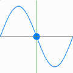
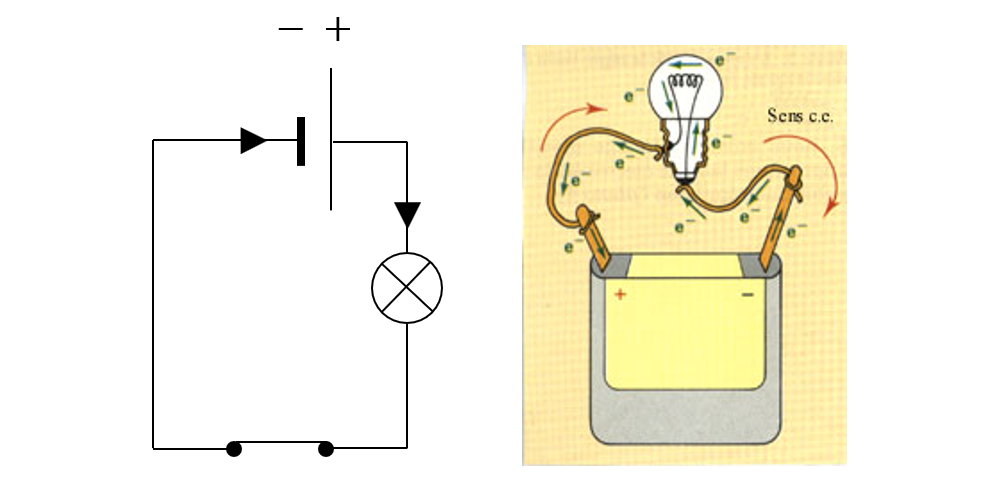

Circuit Paralel
Apasă pe comutator pentru a aprinde/stinge becurile.
Curentul alternativ
Informații despre Electricitate
Ce este Electricitatea?
Electricitatea este o formă de energie rezultată din mișcarea electronilor printr-un conductor.
Tipuri de Electricitate
Există două tipuri principale: electricitate statică și electricitate dinamică.
Unitatea de Măsură
Principala unitate de măsură a electricității este voltul (V), amperul (A) și wattul (W).
Surse de Electricitate
Electricitatea poate fi generată din surse naturale precum soarele, vântul și apa.
Legea lui Ohm
Legea lui Ohm afirmă că tensiunea (V) este egală cu produsul dintre rezistență (R) și curent (I):
V = I × R.
Circuit electric
{kind=link}
Un circuit electric este un traseu închis prin care circulă curentul electric, format din surse de tensiune (baterii, prize), conductori (fire) și consumatori (becuri, motoare). Poate fi în serie sau paralel, iar funcționarea sa depinde de legăturile dintre componente și de caracteristicile acestora.